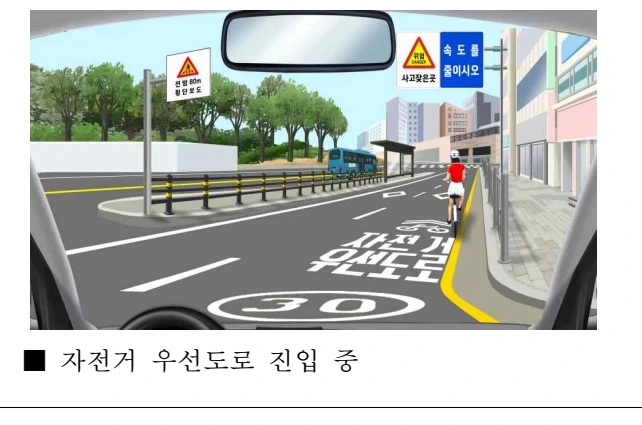

861. Дараахын аль нь хамгийн аюулгүй жолоодох арга 2 вэ?

- ①Унадаг дугуйн хөдөлгөөнд саад учруулахгүйгээр баруун замын хажууд түр зогсоно.
- ②Урд явган хүний гарц байгаа тул явган зорчигчийг анхаарч удаан явна.
- ③Гүйцэж түрүүлэх үед хурд хэтрүүлэхийг зөвшөөрдөг тул цагт 50 км хурдтай явна.
- ④1-р эгнээ рүү эгнээ сольсны дараа унадаг дугуйтай аюулгүйн зай барина.
- ⑤Дуут дохио ашиглан унадаг дугуйг замын хажуугаар явахыг яаруулна.
Хариулт харах
Зөв хариулт
② Урд явган хүний гарц байгаа тул явган зорчигчийг анхаарч удаан явна.
④ 1-р эгнээ рүү эгнээ сольсны дараа унадаг дугуйтай аюулгүйн зай барина.
Үндэслэл
Унадаг дугуйн давуу эрхтэй зам нь автомашины хөдөлгөөн БНСУ-ын Ерөнхийлөгчийн тогтоолд заасан хэмжээнээс бага замын хэсэг, эгнээнд тэмдэглэгээ хийж, дугуй ба бусад машин аюулгүй хамт зорчихоор байгуулсан зам. Дугуйн хөдөлгөөнд давуу эрх олгоно. ① Замын захын шар үргэлжилсэн шугам нь түр болон удаан зогсохыг хориглоно.
Үндэслэлийн текст нь машин орчуулга.